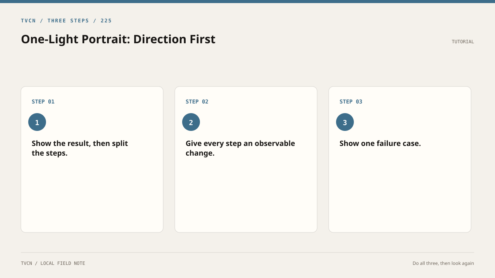

One lamp sets direction; bounce fills
With one lamp, decide where it comes from: side-back for a rim, side-front for the face, top for pressure. Wrong direction cannot be saved by ten more lamps. Fill with a white wall, foam board or reflector, not a second lamp from the same side.
Shoot a test and read the nose and jaw shadow; the shape tells the audience the mood.
Limits
One light is not flat. Flag the other side to deepen contrast; do not shove the lamp straight on to save time, or the face goes flat.
One-light portrait: direction first, brightness second
One lamp can have depth if direction and distance are right. Place it 45° to the subject's side, 1–1.5 meters away; fill the other side with a white wall or bounce, keeping about 2:1.
- Turn off ambient light and use only the key. Check that nose and chin shadows fall the same way.
- Higher light deepens the eye sockets; do not go above the hairline or you get a ghost shadow.
- Soften with a box or white cloth; the closer the size to the face, the softer. Do not bare-bulb the face.
Acceptance: shadow should still hold skin texture. Dead black means not enough fill; flat means the key is too frontal. Shape lives between them.
Three-step flow

On set
Place the light at 45 degrees, one meter from the face. Shoot one frame to see the nose shadow, then choose the softbox size.
Do this
One-light portraiture fixes direction first: 45 degrees, side, or back; then discuss softness and brightness.
- Place the light at 45 degrees, one meter from the face.
- Shoot one frame and watch the nose shadow.
- Then decide the softbox size.
Avoid
Do not change softboxes first; without direction, every size is a different wrong.
Image note. Covers, diagrams and step images on this page are editorial illustrations or structure diagrams, not photographs of a test performed here; they are not evidence of measured gear performance. Where an image is AI-assisted, the caption says so. Read the test conditions in the text before treating an image as proof.